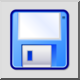
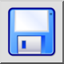
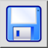
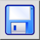

Сохранить
Панель инструментов / Иконка:
 

Меню: Файл > Сохранить
Горячая клавиша: Ctrl+S (Мак: ⌘S)
Команды: save
Это автоматический перевод.
Панель инструментов / Иконка:
 

Меню: Файл > Сохранить
Горячая клавиша: Ctrl+S (Мак: ⌘S)
Команды: save
This command saves the current drawing to the same file it was loaded from. If you want to save a newly created drawing or save the current drawing to a new file, use the menu File - Save As instead. You will then be asked for a file name before the drawing is saved.